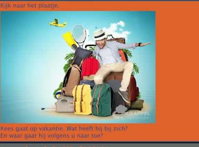
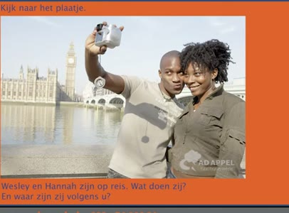
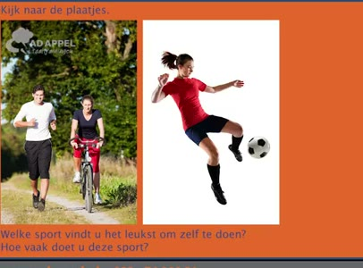
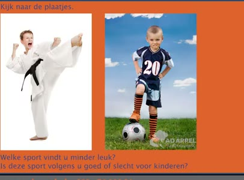
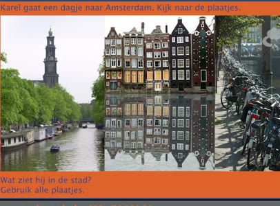
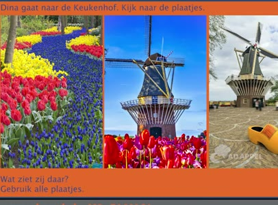

🔊 6 題 🖼️ 6 題 | YouTube ▶
🗣 Ik doe mijn boodschappen bijna altijd met de fiets. Hoe doet u uw boodschappen?
我幾乎總是騎自行車去買東西。 您怎麼買東西？
Ik doe mijn boodschappen met de auto.
我開車去買東西。
🗣 Ik houd van autorijden. Houdt u ook van autorijden? Vertel ook waarom u wel of niet van autorijden houdt.
我喜歡開車。您也喜歡開車嗎？ 也請說明您為什麼喜歡或不喜歡開車。
Ik houd niet van autorijden, want er zijn altijd files op de weg. Ik luister elke dag naar het nieuws op de radio.
我不喜歡開車，因為路上總是塞車。 我每天聽廣播新聞。
🗣 Hoe vaak luistert u naar de radio? En wat hoort u het liefst op de radio?
您多久聽一次廣播？您最喜歡聽廣播的什麼內容？
Ik luister elke dag naar de radio. Ik luister het liefst naar muziek.
我每天聽廣播。 我最喜歡聽音樂。
🗣 Ik ga graag naar een feestje in het weekend. Wat doet u het liefst in het weekend? En vertel ook waarom u dat leuk vindt.
我週末喜歡去派對。 您週末最喜歡做什麼？ 也請說明您為什麼喜歡做那件事。
Ik ga het liefst naar een discotheek, want ik houd van dansen. Ik ontvang graag vrienden op bezoek.
我最喜歡去夜店，因為我喜歡跳舞。 我喜歡邀請朋友來訪。
🗣 Ontvangt u graag vrienden? En wat doet u dan met uw vrienden?
您喜歡邀請朋友嗎？邀請朋友時您通常做什麼？
Soms komen vrienden op bezoek. Dan gaan we samen lekker eten. Ik vind de winter een heerlijk seizoen.
有時朋友來訪，我們會一起好好吃一頓。 我覺得冬天是一個很棒的季節。
🗣 Welk seizoen vindt u het prettigst? En vertel ook waarom.
您覺得哪個季節最好？請說明原因。
Vertel ook waarom. Ik vind de zomer goed. In de zomer is het lekker warm.
也請說明原因。我覺得夏天很好。 夏天很暖和。

🗣 Kijk naar het plaatje. Kees gaat op vakantie. Wat heeft hij bij zich? En waar gaat hij volgens u naartoe?
請看圖片。Kees 要去度假。 他帶了什麼？您認為他要去哪裡？
Hij heeft veel rugzakken. Hij gaat naar Bali.
他帶了很多背包。 他要去巴厘島。

🗣 Kijk naar het plaatje. Wesley en Hannah zijn op reis. Wat doen zij? En waar zijn zij volgens u?
請看圖片。 Wesley 和 Hannah 在旅行。他們在做什麼？ 您認為他們在哪裡？
Ze maken een foto. Ze zijn in Londen.
他們正在拍照。他們在倫敦。

🗣 Kijk naar de plaatjes. Hoe vaak doet u deze sport?
請看圖片。 您多久從事一次這項運動？
Ik vind fietsen het leukst. Ik fiets elke dag.
我覺得騎自行車最有趣。 我每天騎自行車。

🗣 Kijk naar de plaatjes. Welke sport vindt u minder leuk? Is deze sport volgens u goed of slecht voor kinderen?
請看圖片。 您覺得哪項運動比較不喜歡？ 您認為這項運動對小孩是好是壞？
Ik vind voetbal minder leuk. Voetbal is niet goed voor kinderen. Karel gaat een dagje naar Amsterdam.
我不太喜歡足球。 足球對小孩不好。 Karel 去阿姆斯特丹玩一天。

🗣 Kijk naar de plaatjes. Wat ziet hij in de stad? Gebruik alle plaatjes.
請看圖片。 他在城市裡看到了什麼？請用所有圖片說明。
Hij ziet veel fietsen. Hij ziet boten en hij ziet veel oude huizen.
他看到了很多自行車。 他看到船，也看到許多老房子。

🗣 Dina gaat naar de Keukenhof. Kijk naar de plaatjes. Wat ziet zij daar? Gebruik alle plaatjes.
Dina 去了庫肯霍夫。看這些圖片。 她看到了什麼？請使用所有圖片。
Zij ziet veel bloemen. Zij ziet een molen. En zij ziet een klomp.
她看到許多花。她看到一座風車。 而且她看到一隻木屐。